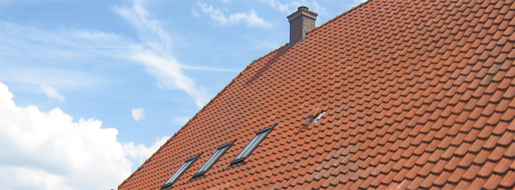
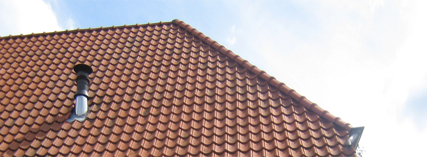
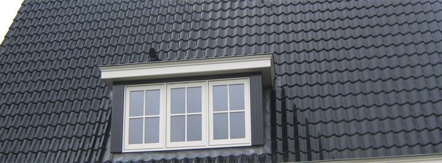
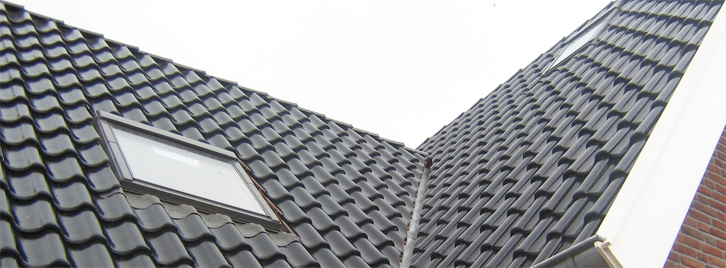

Dakpannen, dakplaten, scharnierkappen, renovatie en dakramen – vanuit Rijssen in heel Oost-Nederland en verder.
Offerte aanvragen ContactSneldekkers en gebakken pannen.
Aanbrengen van dakplaten.
Plaatsen van complete scharnierkappen.
Uw dak weer jaren mee.
Plaatsen van dakramen en dakdoorvoeren.
Panlatten en ander timmerwerk.




H. Slagman Dakdekkersbedrijf is opgericht in maart 2000 en heeft veel ervaring met het aanbrengen van dakpannen, dakplaten, scharnierkappen, dakramen en timmerwerk op het dak.
Vertel ons wat u nodig heeft, dan ontvangt u een vrijblijvende offerte op maat.
Ter Maatstraat 38, 7462 RC Rijssen
Tel. 06-53266011
martijn@hslagmandakdekkersbedrijf.nl
Op afspraak – neem gerust contact op.
Oost-Nederland, Achterhoek, Gelderland en Zuid-Holland